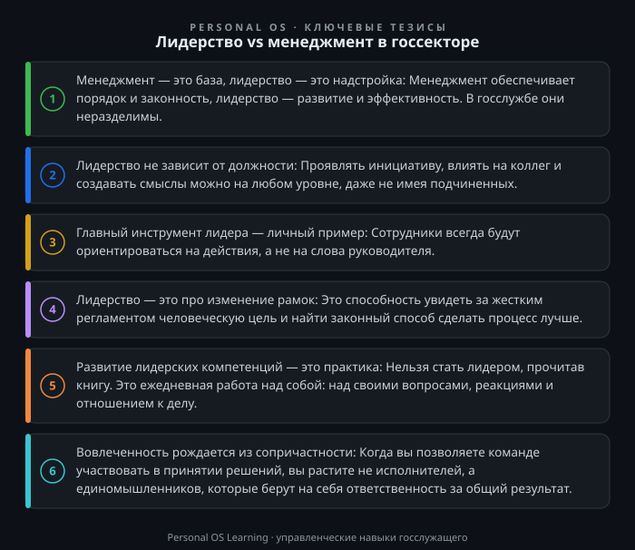

В государственной гражданской службе России сегодня происходят тектонические сдвиги. Цифровизация, ориентация на «клиентоцентричность», запрос общества на открытость и эффективность — всё это требует от руководителя не просто умения контролировать процессы, но и способности вести за собой команду в условиях неопределенности. Однако в реальной работе мы часто сталкиваемся с подменой понятий: должность руководителя воспринимается как автоматический статус лидера, а управление сводится к администрированию и контролю исполнения поручений.
Почему эта тема критически важна именно сейчас? Потому что бюджетные средства осваиваются, отчеты сдаются, но цели национального развития достигаются не всегда. Причина — в разрыве между формальным менеджментом и реальным лидерством. В этой статье мы разберем, чем принципиально отличаются эти подходы, почему в госсекторе невозможно опираться только на один из них, и как развить в себе лидерские компетенции, не дожидаясь повышения в должности.
Классическая дилемма Стивена Кови как нельзя лучше описывает суть проблемы. Менеджмент в госсекторе — это умение эффективно выполнять поставленные задачи: соблюдать регламенты, управлять бюджетом, контролировать сроки. Лидерство — это формирование видения и смыслов, ради которых эти задачи выполняются.
Давайте разберем это различие на уровне практических действий руководителя отдела.
| Аспект | Менеджмент (Администрирование) | Лидерство (Вдохновение) |
| :--- | :--- | :--- |
| Фокус | Процессы, инструкции, контроль | Люди, цели, развитие |
| Вопрос | Как сделать правильно? | Зачем мы это делаем? |
| Инструменты | Планы, реестры рисков, КПЭ | Ценности, убеждение, личный пример |
| Результат | Стабильность, порядок, отсутствие ошибок | Изменения, инновации, вовлеченность |
| Реакция на сбой | Поиск виновного, корректировка регламента | Анализ причин, поддержка команды, выводы |
Показательный пример: при внедрении нового электронного документооборота (СЭД) менеджер сфокусируется на настройке технической поддержки, инструкциях и контроле сроков регистрации. Лидер потратит время на то, чтобы объяснить сотрудникам, как переход на «цифру» сократит их рутинную работу и ускорит оказание услуг гражданам. Он создаст «образ будущего», который захочется строить.
Госслужба немыслима без жесткой иерархии и нормативного регулирования. Правовая основа деятельности — Федеральный закон «О государственной гражданской службе Российской Федерации» от 27.07.2004 № 79-ФЗ — четко определяет права, обязанности и запреты. Должностные регламенты, административные процедуры — это «правила игры», которые менеджер обязан соблюдать неукоснительно. В этом смысле менеджмент — это техническая база, фундамент, на котором держится законность.
Однако, слепое следование букве закона без понимания его духа — это «болезнь» бюрократического аппарата. Когда чиновник отказывает заявителю, потому что «так написано в регламенте», он формально прав, но по сути — нет. Он менеджер процесса, но не лидер в своей сфере.
Реальность госслужбы такова: закон — это рамка, но в рамках этой рамки всегда остается коридор для принятия решений. И вот здесь вступает лидерство. Именно лидерские качества позволяют руководителю увидеть в этом коридоре возможность для улучшения, а не просто найти способ отписаться. Например, разработать более удобный для граждан алгоритм подачи документов, не нарушая закон, а используя его возможности.
Почему же так сложно быть лидером в госсекторе? Система сама по себе создает ряд барьеров, которые важно осознавать, чтобы их преодолевать.
Эти барьеры — не приговор, а условия работы. Лидерство в таких условиях — это способность действовать эффективно вопреки системе, а не благодаря ей, постепенно меняя правила игры к лучшему.
Лидерство не является врожденным качеством. Это набор компетенций, которые, согласно методологии, можно и нужно развивать. Вот несколько конкретных инструментов, которые можно внедрить уже завтра.
Инструмент 1. «Смена оптики» (Рефрейминг)
Вместо того чтобы формулировать задачу как «Подготовить отчет», сформулируйте её как «Подготовить отчет, который позволит нам выявить узкие места в нашей работе и скорректировать планы». Сместите фокус с «отчитаться» на «улучшить». Этот простой прием меняет мотивацию сотрудников с формальной на содержательную.
Инструмент 2. «Личный пример» (Моделирование поведения)
Самый мощный инструмент лидера — это его собственное поведение. Если вы требуете от сотрудников соблюдения сроков, но сами постоянно задерживаете согласование документов — ваши слова расходятся с делом. Лидер транслирует ценности через каждодневные поступки: уважительное отношение к коллегам, пунктуальность, готовность признавать свои ошибки.
Инструмент 3. «Коллегиальное обсуждение» (Вместо единоличного решения)
Вместо того чтобы единолично решать, как выполнить поручение, соберите команду и обсудите варианты. Спросите: «Как вы видите решение этой задачи?», «С какими сложностями мы можем столкнуться?». Это не только повышает качество решений, но и формирует чувство сопричастности и ответственности у команды. Люди более ответственно относятся к тому, что создали сами.
Инструмент 4. «Зона ближайшего развития»
Давайте сотрудникам задачи на грани их компетенций, но с вашей страховкой. Допустим, сотрудник готовит ответ на сложный запрос. Вместо того чтобы писать его самому, предложите ему сделать черновик, а вы выступите в роли наставника и укажете на ошибки. Это развивает сотрудника и освобождает ваше время для стратегических задач.
Многие ошибочно полагают, что лидерство нужно только на уровне министерства или ведомства. Это не так. Лидерство необходимо на любом участке, где есть люди и процесс.
Для того чтобы перейти от теории к практике, предлагаю вам выполнить несколько упражнений в течение ближайшей недели.
Задание 1. «Переформулируйте задачу» (15 минут)
Возьмите план работы вашего отдела на текущий месяц. Выберите три рутинные задачи. Напротив каждой задачи напишите, как бы вы сформулировали её с позиции «Менеджер» (как выполнить) и с позиции «Лидер» (зачем это нужно, какую ценность это несет для граждан или коллег). Например:
Задание 2. «Смена роли на совещании» (20 минут)
Подготовьтесь к ближайшему рабочему совещанию. Вместо того чтобы просто доложить о статусе исполнения поручений, подготовьте один вопрос к коллегам из смежных отделов, который направлен на улучшение общего результата. Например: «Коллеги, мы видим, что заявки от наших совместных клиентов обрабатываются дольше. Как мы можем оптимизировать наше взаимодействие, чтобы ускорить процесс?» Это переведет вас из позиции докладчика в позицию лидера, влияющего на общий результат.
Задание 3. «Интервью с сотрудником» (30 минут)
Проведите индивидуальную беседу с одним из ваших подчиненных (или коллегой, если вы не руководитель) на тему «Развитие». Задайте ему всего три вопроса: 1) Какие аспекты вашей работы приносят вам наибольшее удовлетворение? 2) Какие навыки вы хотели бы развить в ближайший год? 3) Что мешает вам работать эффективнее? Ваша задача — не давать оценок и не советовать, а просто внимательно слушать. Это упражнение покажет, что вам небезразличны амбиции сотрудников, и заложит основу доверительных отношений.
Лидерство и менеджмент в госсекторе — это не антагонисты, а две стороны одной медали. Менеджмент — это то, что позволяет системе работать стабильно и законно. Лидерство — это то, что позволяет системе развиваться и отвечать на вызовы времени. Дефицит лидерства на государственной службе — это не абстрактная проблема, а конкретная угроза эффективности управления. Но самое главное — лидерство начинается не с должности, а с личного выбора каждого: оставаться ли винтиком в бюрократической машине или стать ее мотором. Сделайте этот выбор сегодня, и ваша команда, а вместе с ней и вся система, станет чуточку эффективнее.

Открыть инфографику в полном размере ↗